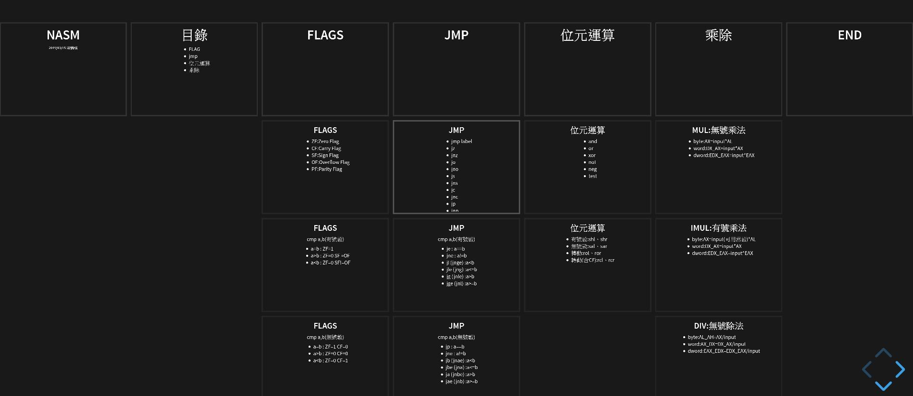
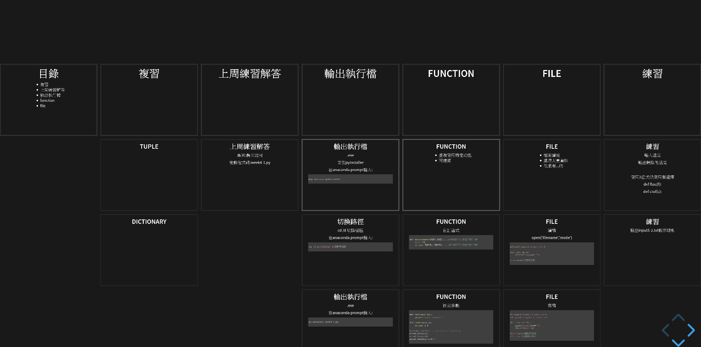
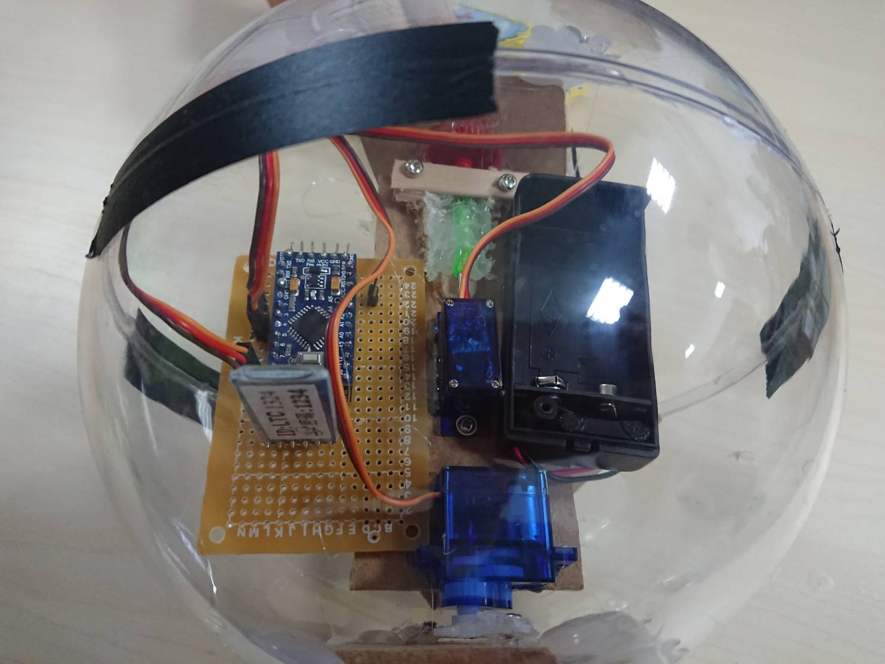

師大資研社迎新
社團宗旨
官方版
資訊領域的發展日新月異，閉門造車是無法跟上發展的腳步， 因此資訊研究社的宗旨就是提供一個讓所有對資訊有興趣的人可以互相交流學習， 並找到志同道合朋友的地方，也讓那些對資訊領域有興趣卻不得其門而入者， 可以有一個加入我們的方法。現實版
歡迎來到資研社泡茶聊天寫程式平常在做啥?
學習組合語言
玩Python
玩Arduino
期末社員大會

Pizza \(OuO\)
社課時間 & 地點
- 每周四 19:00 ~ 21:00
- @ 樸105